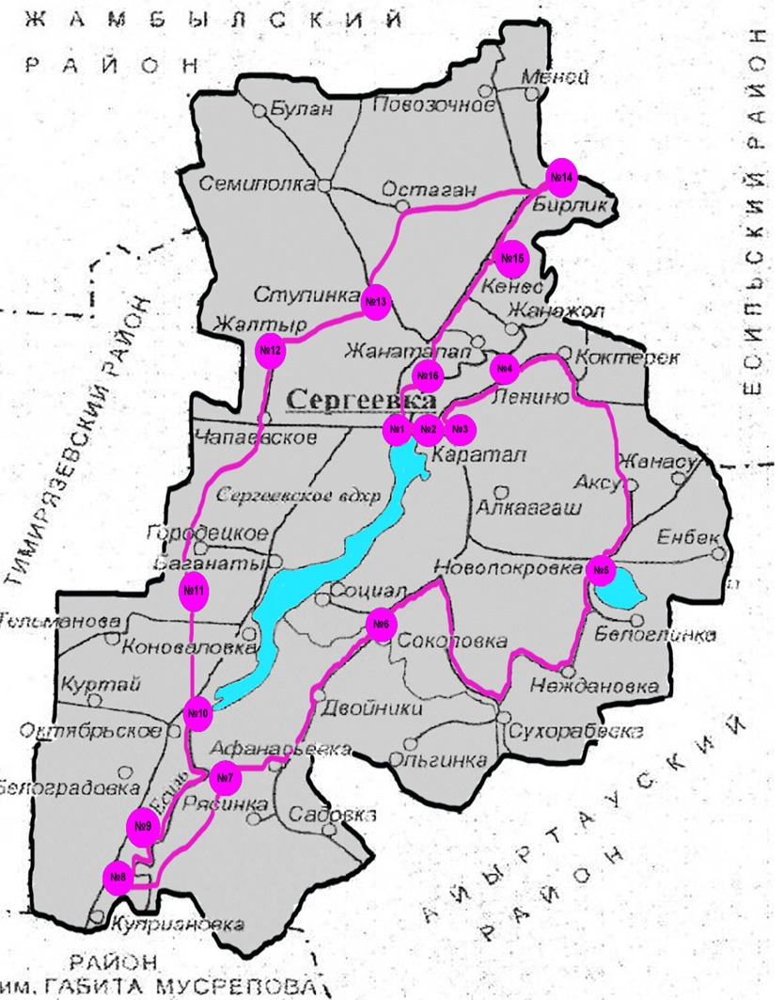
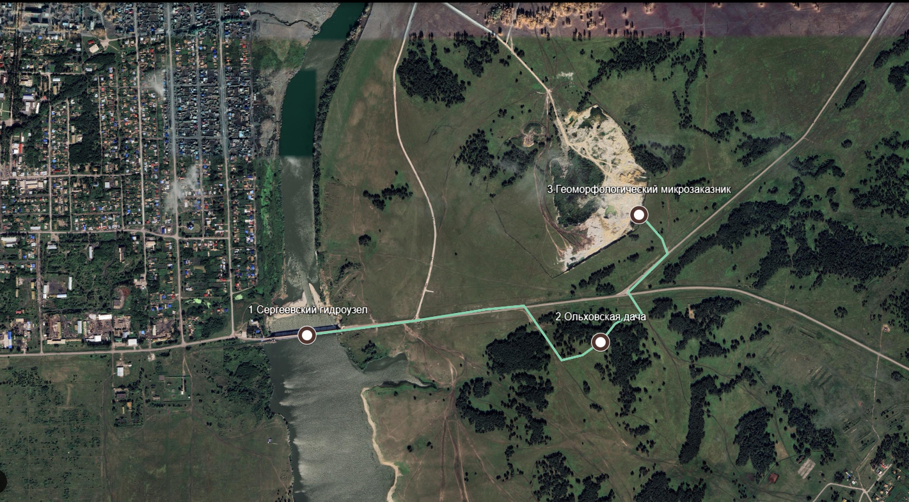
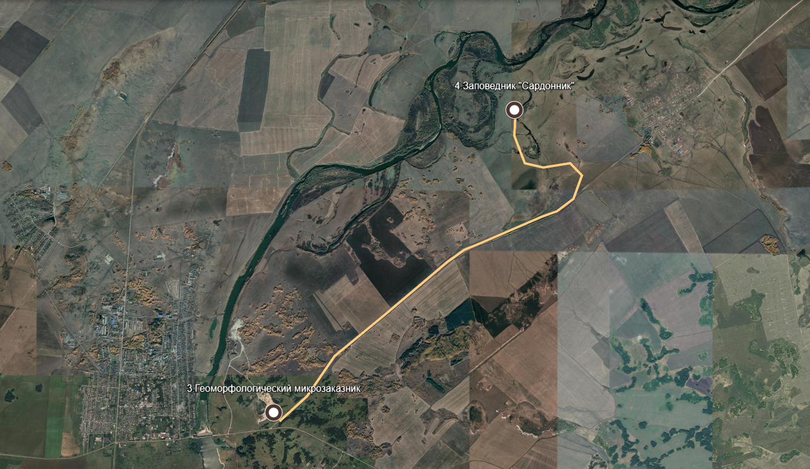
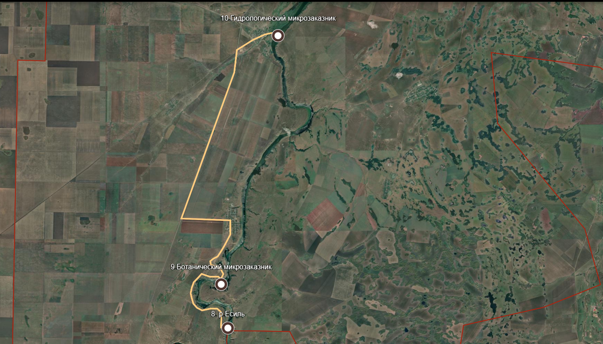
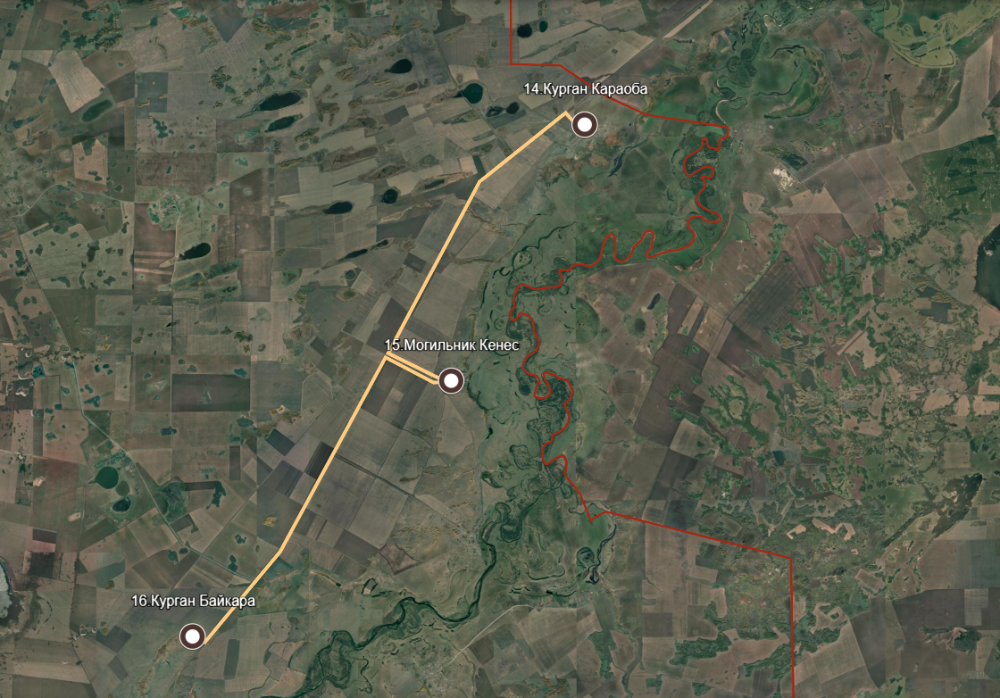
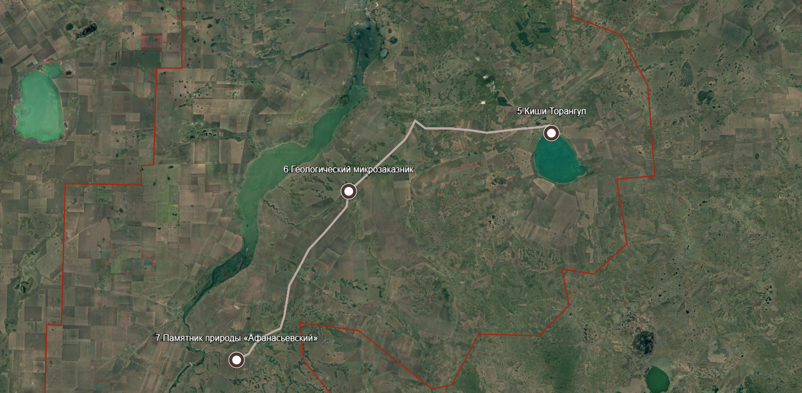
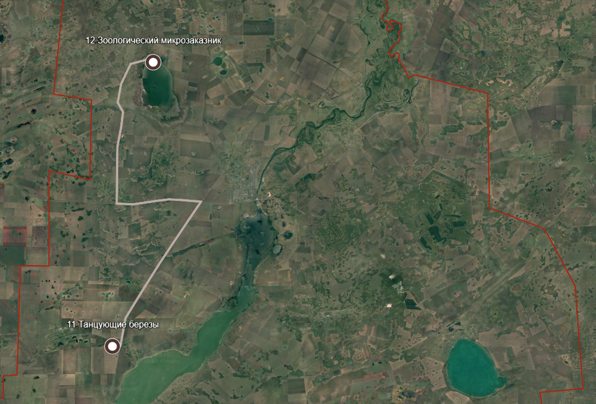

Экотуризм в районе Шал Акына:виртуальное путешествие для всех
Добро пожаловать на сайт «Экотуризм в районе Шал Акына»! Здесь вы найдете уникальные маршруты по живописным уголкам Северо-Казахстанской области, которые можно исследовать пешком, на велосипеде или на автомобиле.
О проекте:
Наш проект объединяет природу, культуру и технологии. Мы создали интерактивные маршруты с музыкальным сопровождением, чтобы каждый мог погрузиться в атмосферу этих мест — даже те, кто не может посетить их лично.
Что вас ждет?
Пешие прогулки для любителей спокойного отдыха; Велосипедные маршруты разного уровня сложности; Автопутешествия по самым живописным дорогам; Музыкальная карта, передающая дух местности через звуки
Возможности для инклюзивного туризма. Мы стремимся к тому, чтобы природа была доступна каждому. Наш сайт позволяет:
Виртуально посетить маршруты с помощью интерактивных карт, Услышать природу через аудиосопровождение и локальный фольклор, Ознакомиться с описаниями в удобном формате (подходит для людей с нарушениями зрения)
Начните свое путешествие уже сегодня!
Выберите маршрут по душе — от короткой семейной прогулки до многокилометрового велопохода. Природа Шал Акына ждет вас!
Мы верим, что красота природы должна быть доступна каждому — независимо от физических возможностей.
P.S. Хотите узнать больше? Перейдите в раздел Маршруты или попробуйте интерактивную карту с музыкальным сопровождением!
Пеший маршрут

Пеший маршрут под названием «Тропа времени: от вод до камня» включает в себя 3 точки - Сергеевский гидроузел, Ольховская дача, Геоморфологический микрозаказник. Общая длина составляет 2 км.
Данный маршрут подойдет для Начинающих туристов, семей с детьми, Любителей коротких прогулок на природе
Особенностью маршрута является легкая доступность и небольшая протяженность, уникальные природные ландшафты и живописные виды, возможность прослушивания музыкальных композиций, отражающих локальный фольклор.
Советы путешественникам: Подготовить удобную обувь для прогулки по пересеченной местности, взять с собой воду и лёгкий перекус.
Идеальное время для посещения – весна и лето, когда природа наиболее красочна.
Велотуры

Первый веломаршрут - «Тайны камня и лесной гармонии» . состоит из двух точек Геоморфологический микрозаказника и Заповедника «Сардонник», длина составляет 11,4 км.
Рекомендуется для: Начинающих велосипедистов и семейного отдыха, краткосрочных поездок на природе
Особенности маршрута: Короткая дистанция с плавными подъемами, доступ к культурным объектам и природным памятникам. Музыкальное сопровождение, подчеркивающее локальную атмосферу
Советы путешественникам: взять с собой запасы вод и еды. Планировать поездку в ясную погоду, обратить внимание на флору и фауну маршрута.

Второй веломаршрут под названием «Зеленый берег Есиля» состоит из р.Есиль, Ботанического микрозаказника, Гидрологического микрозаказника. Общая протяженность – 29.5км.
Рекомендуется для: любителей природы и сельских пейзажей, групповых поездок и велопутешествий.
Особенности маршрута:Средняя сложность с участками грунтовых дорог,возможность исследовать уникальные природные зоны, интерактивная карта с музыкальным сопровождением для каждой точки
Советы путешественникам: подготовить запас воды и инструменты для ремонта велосипеда, надеть одежду, защищающую от ветра и пыли. Сделать остановки для фото на ключевых точках.

Третий веломаршрут имеет название - «Следы древности» , включает в себя три точки Курган Караоба, Могильник Кенес, Курган Байкара, общая длина составляет 35,3 км.
Рекомендуется для опытных велосипедистов, готовых к длительным поездкам, любителей активного отдыха и живописных панорам.
Особенности маршрута: - протяжённый маршрут с разнообразным рельефом, Виды на холмистую местность и степные просторы, интерактивная карта с музыкальным сопровождением.
Советы путешественникам: Проверить техническое состояние велосипеда перед поездкой, захватить солнцезащитные средства и головной убор. Планировать маршрут на утренние часы для избегания жары.
Автотуры

Первый автотур под названием «От песчаных берегов к каменным склонам» включает такие точки как озеро Киши Торангул, Геологический микрозаказник, Памятник природы «Афанасьевский». Общая протяженность 55,8 км.
Рекомендуется для любителей длительных поездок и исследования удаленных локаций, групповых экскурсий и фототуров.
Особенности маршрута - длинный маршрут с разнообразными природными зонами, возможность посещения редких природных объектов, сопровождающая музыка, отражающая культурное наследие региона.
Советы путешественникам: Проверить наличие запасного колеса и инструментов, планировать маршрут с учётом времени на остановки и фотосъёмку, соблюдать осторожность на грунтовых и проселочных дорогах. Также захватить с собой воду и еду.

Второй автотур состоит из двух точек - танцующие березы и зоологический микрозаказник, протяженность составляет 46 км.
Рекомендуется для семейных поездок и комфортного осмотра достопримечательностей. Туристов, предпочитающих исследовать большие расстояния на автомобиле.
Особенности маршрута: Доступ к знаковым культурным и природным объектам, возможность совмещения с пикником на природе.
Советы путешественникам: Заправить автомобиль перед поездкой, запастись водой и едой для пикника . рекомендуется планировать посещение при благоприятных погодных условиях.